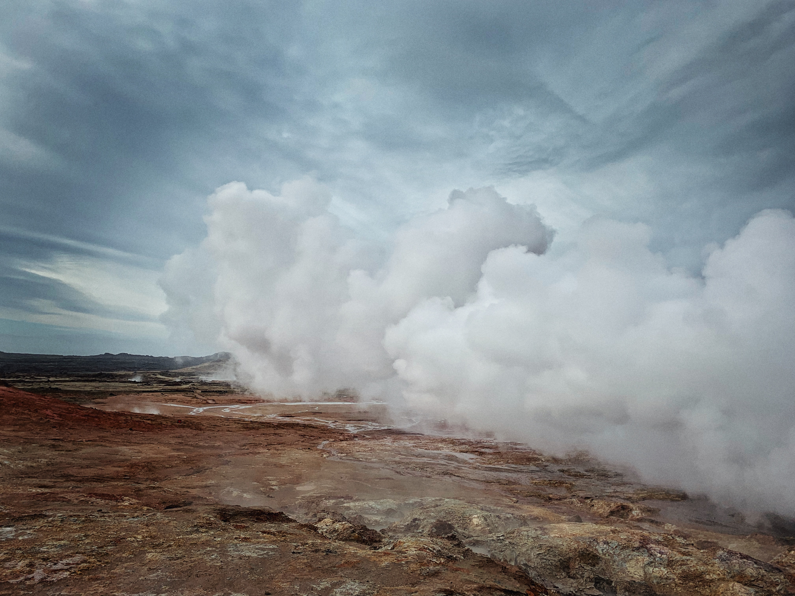

Weather Summary
Current Temp:
High:
Wind Speed:
Windchill:
Humidity:
HIGH TEMPERATURE FORECAST
| Day | Day 1 | Day 2 | Day 3 | Day 4 | Day 5 |
|---|---|---|---|---|---|
| Forecast |
ABOUT SODA SPRINGS
Soda Springs is a city in Caribou County, Idaho, United States. Its population was 3,058 at the 2010 census. The city has been the county seat of Caribou County since the county was organized in 1919. In the 1860s, Soda Springs served as the seat of Oneida County. For more... Wikipedia Page
CONTACT INFORMATION
Email: petrichor.weather@petrichor.com
Social Media: @Petrichor.Weather